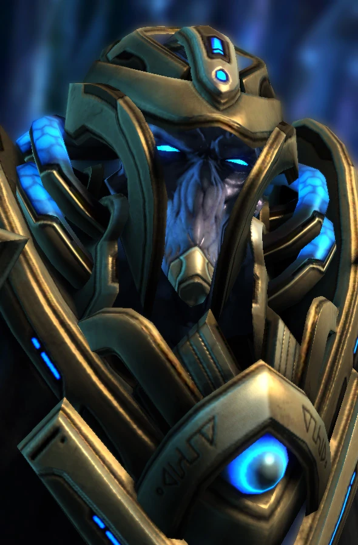

Ураган
| Ураган | |
|  | |
| Информация о юните | |
| Тип: | Воздушная боевая единица |
| Описание: | Стрелок дальнего боя, бомбардировщик |
| Построен из: | Звездные врата |
| Требование: | Маяк флотилии |
| Стоимость: |  250 250  175 175  43 43  5 5 |
| Горячие клавиши: | T |
| Атака 1: Резонансная катушка | |
| Цели: | Наземные |
| Урон | 40(+4) |
| DPS: | 16.97 (+1.697) |
| Перезарядка: | 2.36 |
| Бонус: | +40 против строений (тектонические дестабилизаторы) |
| Бонус DPS: | +16.97 против строений (тектонические дестабилизаторы) |
| Ранг: | 10 |
| Атака 2: Кинетическая перегрузка | |
| Цели: | Воздушные |
| Урон | 30(+3) |
| DPS: | 12.73 (+1.273) |
| Перезарядка: | 2.36 |
| Бонус: | +22 против массивных единиц |
| Бонус DPS: | +9.32 (+0.847) против строений (тектонические дестабилизаторы) |
| Ранг: | 14 |
| Статистика юнита | |
| Защита: |  200 200  100 100  2 (+1) 2 (+1) |
| Атрибуты: | Бронированный Механический Массивный |
| Зрение: | 12 |
| Скорость: | 3.15 |
| Силен против: | Либератор Хозяин стаи Фениск |
| Слаб против: | Викинг Губитель Излучатель пустоты |
Обзор
Ураган — Огромный массивный корабль, «Темпест» был разработан протоссами после первой фазы Второй Великой войны, чтобы максимизировать эффективность их боевой машины против врагов, особенно против дальнобойного оружия зергов и терранов. Они считаются одними из самых мощных боевых кораблей в арсенале протоссов. Тем не менее, ураганы все еще можно обрушить прицельным огнем, если их противник подойдет достаточно близко, чтобы атаковать их.
Большие двигатели «Темпеста» генерируют достаточно энергии, чтобы сместить значительную массу корабля, и предназначены для использования огромной выходной мощности кинетической матрицы корабля. Фазовые кузнецы снабдили Ураганов сложной технологией стабилизации, чтобы предотвратить колебания энергии, которые могут поставить под угрозу целостность корабля при стрельбе из его основного оружия.
Дизайн юнита
Впервые увидев бурю в бою, талдаримы, в редком случае, будучи впечатленными дэлаамами, поклялись захватить их для флота смерти. К 2506 году бури были включены в их арсенал. Tempest Ихан-Ири имеют каменную поверхность, которая увеличивает их способность фокусировать невероятную мощность их кинетических матриц.
После Конца Войны кузнецы-экспериментаторы, вдохновленные Золотым веком экспансии, создали индивидуальные бури с блестящим орнаментом, способным противостоять разрушительной энергии кинетической матрицы корабля.
Вооружение
Кабина «Темпест» имеет специальное экранирование, расположенное в таком месте, где видно основное орудие корабля. С помощью этого устройства пилоты бури накапливают нестабильную энергию в кинетической матрице, которая приводит в действие бурю, а затем продвигают энергию через корпус корабля, направляя ее через множество резонаторов, катушек и усилителей, размещенных в похожей на клешню носовой части корабля. Это, объединенное с содержащейся сферой сильно заряженных частиц, затем может быть запущено в удаленные цели. Полученный снаряд, хотя и нестабилен и медленно движется, может быть запущен на большие расстояния, чтобы ослабить вражеские силы или уничтожить оборонительные укрепления, прежде чем армии протоссов вступят в бой. В связи с этим бури часто располагаются позади ударных отрядов протоссов. Диапазон действия матрицы настолько велик, что фактически превышает радиус датчиков бури. Таким образом, бури иногда нужны корректировщики, чтобы обнаружить далекие цели.
Пилоты-ураганов должны вносить коррективы, чтобы каждый взрыв был достаточно сплоченным, чтобы достичь цели. Они также регулируют поток энергии из кинетической матрицы, чтобы предотвратить катастрофические перегрузки, которые могут поставить под угрозу или уничтожить их корабль. Энергия, проходящая через корпус Ураганов, настолько монументальна, что его пилоты должны носить громоздкую амортизирующую броню, чтобы противостоять ей.
В конце Конца Войны кузнец фаз Каракс разработал ураганы, которые были интегрированы в сеть данных очистителя, что позволяло управлять ими удаленно. Это позволяло им оснащаться передовым дезинтеграционным оружием без риска для пилотов-протоссов. Их тяжелая броня делала его гордостью флотов Очистителей.
Игровая единица
Tempest служит крупным кораблем протоссов дальнего действия, особенно эффективным против массивных юнитов.
У Tempest есть очень дальнобойное («осадное») оружие, как для борьбы с воздухом, так и для борьбы с землей. Tempest наносит небольшой урон за свою стоимость, что сделано намеренно — это в значительной степени вспомогательная единица, предназначенная для стратегического использования, а не для основного боя. Это хорошо для преследования врага и принуждения врага войти в зону действия основных юнитов протоссов. Тем не менее, сила бури заключается в ее способности наносить дополнительный урон «массивным» воздушным единицам противника, таким как крейсер терранов и авианосец. Пара бурь может быстро расправиться с любым из этих юнитов, поскольку они могут эффективно обойти их и обойти их с фланга без риска возмездия.
В патче 3.7 «Ураган» получила способность «Разрушающий взрыв», которая могла оглушать наземные боевые единицы и постройки противника на семь секунд. Эта способность была удалена в последующем обновлении баланса.
Ураганы уязвимы для массовых Викингов, Губителей и Излучателей пустоты. Недавние изменения баланса сделали их гораздо более смертоносными против толп споровых ползунков, но более уязвимыми для торов.